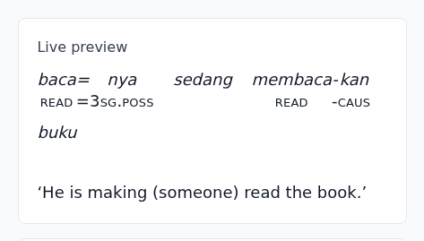
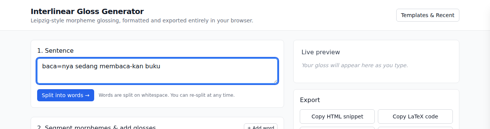
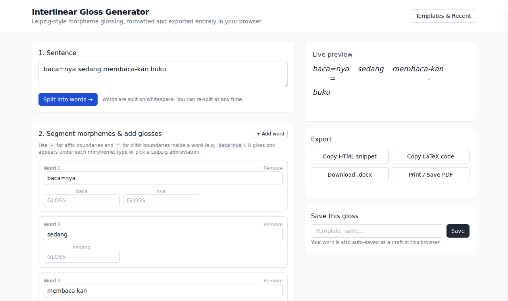
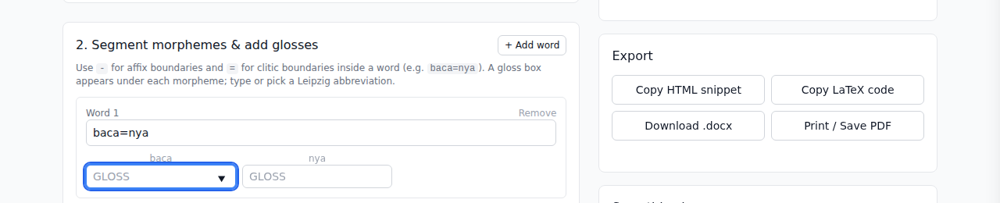
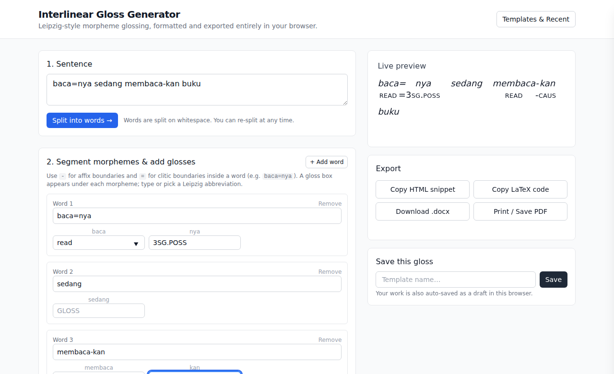
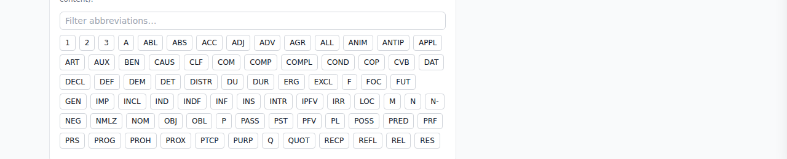
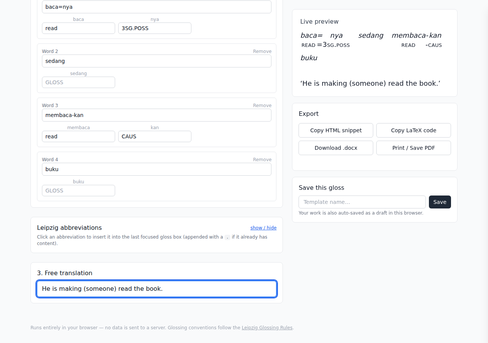
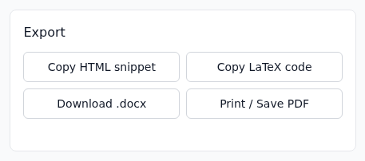
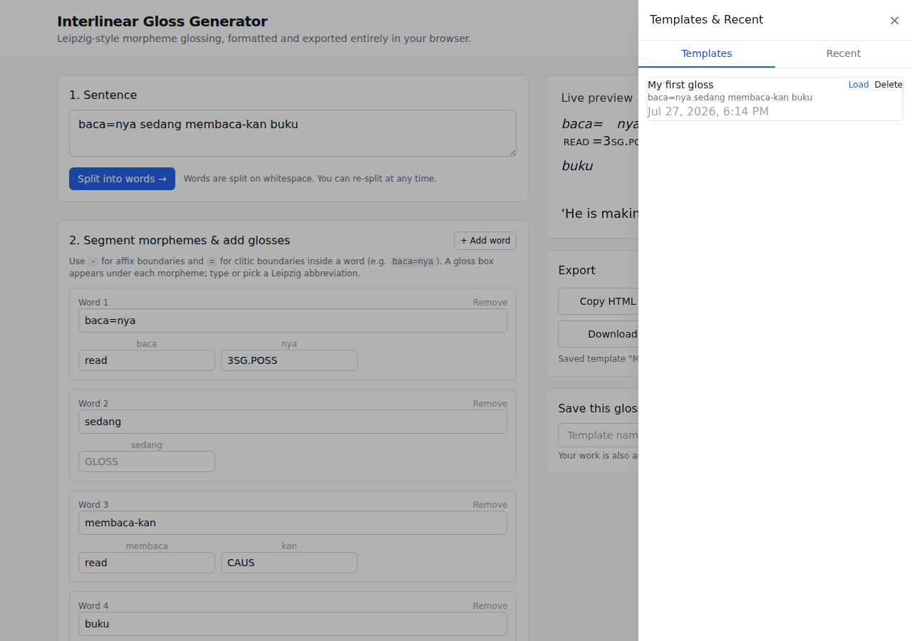

What is Intergloss?
Intergloss is a free, in-browser tool for creating interlinear glosses — the line-by-line breakdown linguists use to show a sentence's original text, its morpheme-by-morpheme meaning, and a free translation, all lined up underneath each other.
A typical interlinear gloss looks like this:

You don't need to know any linguistics jargon to get started — this guide walks through every step, from typing a sentence to exporting a polished gloss for a paper, a slide, or a website.
No installation needed
Intergloss runs entirely in your web browser. Nothing is installed, nothing is uploaded — your sentence, glosses, and translations stay on your own computer.
Step 1 — Type your sentence
Open the app and find the “1. Sentence” box at the top left. Type a sentence in the language you want to gloss, in its normal spelling — you don't need to add any special marks yet.

Then click the blue “Split into words →” button. Intergloss will break your sentence into one editable card per word.

Tip
Words are split wherever there's a space. If you change your mind about the sentence, edit the text box and click “Split into words” again (it will ask before replacing any work you've already done below).
Step 2 — Break words into morphemes
A morpheme is the smallest meaningful piece of a word — for example, cooked has two: cook and -ed. Interlinear glosses label each of these pieces separately, so the next step is marking where those pieces are inside each word.
In each word card, edit the text box to add:
-between two parts joined tightly (an affix), likemembaca-kan.=between a word and an attached clitic, likebaca=nya.
As soon as you add a dash or equals sign, Intergloss automatically creates a small gloss box under each piece.

A gloss box appears under every morpheme you mark.
Filling in each gloss box
Click into a gloss box and type a label for that piece of the word. Two conventions, both supported automatically:
- Lowercase word (e.g.
read,eat,book) — for a piece that translates to an ordinary word. - Capitalized abbreviation (e.g.
PST,PL,3SG) — for a grammatical category. Intergloss automatically renders these in small capitals in the preview and exports, exactly as linguistics papers expect.

Each morpheme lines up with its own gloss underneath.
Not sure which abbreviation to use?
Click “show / hide” next to “Leipzig abbreviations” to open a searchable reference panel based on the standard Leipzig Glossing Rules used in academic linguistics.

- Click into the gloss box you want to fill.
- Type to filter the list, e.g. “past” or “pl”.
- Click an abbreviation to insert it. If the box already has text, it's appended with a dot, e.g. 3 →
3.SG.
Tip
You can also just type abbreviations directly — a small on-screen autocomplete list will suggest matches as you go, so the reference panel is optional.
Step 3 — Add the free translation
Scroll to “3. Free translation” and type a natural, everyday translation of the whole sentence. This becomes the third line of the gloss, shown in quotation marks.
Watch the “Live preview” panel on the right update as you type — this is exactly how your gloss will look in every export.

Exporting your gloss
Once your gloss looks right in the preview, use the “Export” card to get it out of the browser:

- Copy HTML snippet — copies ready-to-paste HTML (with inline styling) for a website, blog, or online document.
- Copy LaTeX code — copies a
gb4e-style\gll ... \gltexample block for academic papers written in LaTeX. - Download .docx — downloads a Word document containing a clean, aligned gloss table you can drop into a paper or handout.
- Print / Save PDF — opens your browser's native print dialog with a clean layout (choose “Save as PDF” as the destination to get a PDF file instead of printing on paper).
Tip
“Copy” buttons place the result on your clipboard — just paste (Ctrl/Cmd+V) into your document, editor, or LaTeX file afterwards. A small status message under the buttons confirms what was copied.
Saving your work
Intergloss automatically saves a draft of what you're working on to your browser, so refreshing the page won't lose your progress.
To keep a gloss for later — for example, a set of example sentences for a paper — give it a name in the “Save this gloss” box and click Save. Open it again anytime from the “Templates & Recent” button in the top right.

- Templates — glosses you named and saved on purpose.
- Recent — an automatic history of your last few glosses, in case you forgot to save.
Good to know
Everything is stored locally in your browser (localStorage). It's tied to this browser on this device — it won't follow you to a different computer, and clearing your browser data will remove it.
Autogloss — the AI-assisted twin
Autogloss is a separate version of this tool that asks Google Gemini to draft the segmentation, glosses, and translation for you. Everything else — the editor, the live preview, the exports — works exactly the same.
Because the site has no server, Autogloss uses your own Gemini API key. Create a free one at Google AI Studio, paste it in once, and it's stored only in your browser. Your sentence is sent to Google only when you press the auto-gloss button.
Check every AI result
Auto-glossing is reasonably good for large, well-documented languages and unreliable for under-resourced ones — exactly the languages interlinear glossing is most often used for. Treat the output as a first draft to correct, never as a finished analysis.
Frequently asked questions
Do I need to install anything?
No. Intergloss is a website — open it in any modern browser (Chrome, Firefox, Safari, Edge) and start typing.
Is my data sent anywhere?
Not in Intergloss — every step runs inside your own browser and nothing is uploaded. In Autogloss, your sentence is sent to Google's Gemini API (using your own key) when you press the auto-gloss button, and nowhere else.
My gloss isn't aligning correctly — what did I do wrong?
Make sure every morpheme boundary uses a plain hyphen (-) or equals sign
(=), with no spaces around it. Each piece needs its own gloss box filled in
for the columns to line up cleanly.
Can I gloss more than one sentence at a time?
Work on one sentence at a time, save it as a template when you're done, then start a new sentence. Your saved templates stay listed in the “Templates & Recent” panel.
Where can I learn more about glossing conventions?
See the official Leipzig Glossing Rules, which Intergloss's abbreviation list follows.